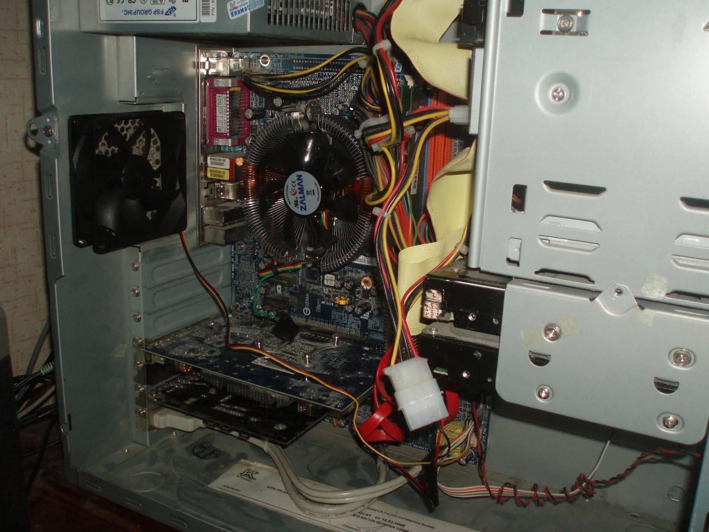
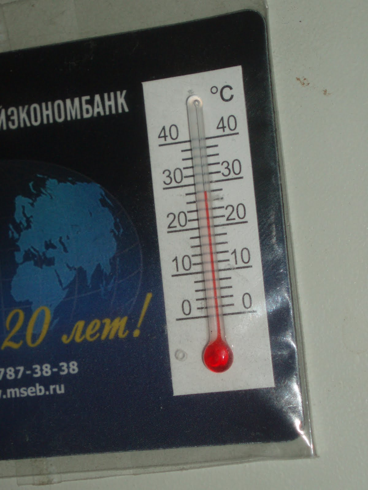

Надоело слушать постоянное жужжание домашнего компьютера, поэтому решил заняться вопросом. Первым делом были закуплены и установлены тихие вентиляторы на процессор и корпус.
Шум хоть и стал меньше, меня он всё равно не устроил. Компьютер и, соответственно, корпус у меня 2006 года, поэтому что-либо совсем уж тихое найти было сложновато. Опытным путём было выяснено, что больше всего шума даёт корпусной вентилятор (для этого достаточно на секунду остановить все вентиляторы поочерёдно пальцем или другим подходящим предметом). Поскольку на вентиляторе имелся не только стандартный 3-контактный разъём, но и разъём Molex, нашлось простое решение - перекинуть контакты, так чтобы снизилось питающее вентилятор напряжение. Подробнее это можно увидеть в разделе "Подключение вентиляторов" из статьи "Конструируем систему охлаждения компьютера". Жёлтый провод я всё-же воткнул в 3-контактный разъём на положенное место, дабы следить за скоростью вращения вентилятора, о чем будет написано чуть ниже.
Вторым кандидатом на настройку стал вентилятор процессора. В BIOS я узнал, что моя материнская плата поддерживает функцию PWM - управление скоростью вращения вентилятора в зависимости от показаний температурного датчика. Простейшее трёхскоростное управление я настроил прямо из BIOS, и если оно вас устроит, то нужды настраивать fancontrol в принципе нет. Меня эти три режима не устроили, захотелось более плавного разгона вентилятора по мере нагревания процессора.
Поскольку я пользуюсь Linux (Debian 6), то и настраивать управление будем в нём.
Первым делом, установим пакет для слежения за сенсорами и запустим обнаружение сенсоров:
# apt-get install lm-sensors # sensors-detect
Отвечаем на все вопросы буквой y. Это важно, т.к. на один из вопросов ответ по умолчанию - n. Без этого пункта у меня не находились сенсоры материнской платы.
Now follows a summary of the probes I have just done. Just press ENTER to continue: Driver `it87': * ISA bus, address 0x290 Chip `ITE IT8712F Super IO Sensors' (confidence: 9) Driver `k8temp' (autoloaded): * Chip `AMD K8 thermal sensors' (confidence: 9) To load everything that is needed, add this to /etc/modules: #----cut here---- # Chip drivers it87 #----cut here---- If you have some drivers built into your kernel, the list above will contain too many modules. Skip the appropriate ones!
Теперь можно заглянуть в /etc/modules и проверить, появились ли там новые модули, добавленные sensors-detect.
Чтобы не перезагружать систему, загрузим эти модули вручную. У меня был добавлен модуль it87, поэтому я подгружаю его:
# modprobe it87
Теперь можно посмотреть информацию, предоставляемую сенсорами:
$ sensors k8temp-pci-00c3 Adapter: PCI adapter Core0 Temp: +32.0°C it8712-isa-0290 Adapter: ISA adapter in0: +1.07 V (min = +0.00 V, max = +4.08 V) in1: +2.58 V (min = +0.00 V, max = +4.08 V) in2: +3.33 V (min = +0.00 V, max = +4.08 V) in3: +2.21 V (min = +0.00 V, max = +4.08 V) in4: +3.02 V (min = +0.00 V, max = +4.08 V) in5: +1.76 V (min = +0.00 V, max = +4.08 V) in6: +2.00 V (min = +0.00 V, max = +4.08 V) in7: +2.35 V (min = +0.00 V, max = +4.08 V) Vbat: +4.08 V fan1: 0 RPM (min = 0 RPM, div = 8) fan3: 1670 RPM (min = 0 RPM, div = 8) temp1: +25.0°C (low = +127.0°C, high = +127.0°C) sensor = thermistor temp2: +29.0°C (low = +127.0°C, high = +60.0°C) sensor = thermistor temp3: +70.0°C (low = +127.0°C, high = +127.0°C) sensor = thermistor cpu0_vid: +1.100 V
У меня есть сенсоры температуры на процессоре и на материнской плате (не знаю, в каких именно местах).
Теперь установим пакет для управления скоростью вращения вентиляторов.
# apt-get install fancontrol
И запустим программу для автоматизированной настройки fancontrol:
# pwmconfig
Программа сразу после запуска сообщает информацию об обнаруженных ею сенсорах температуры, устройствах управления вентиляторами и сенсорах скорости вращения вентиляторов:
Found the following devices: hwmon0/device is k8temp hwmon1/device is it8712 Found the following PWM controls: hwmon1/device/pwm1 hwmon1/device/pwm2 hwmon1/device/pwm3 Giving the fans some time to reach full speed... Found the following fan sensors: hwmon1/device/fan1_input current speed: 2556 RPM hwmon1/device/fan3_input current speed: 1654 RPM
Лучше всего сразу куда-нибудь скопировать эту информацию, чтобы понимать, что за устройства программа имеет в виду, когда спрашивает вас о чём-то. Например, для меня было важно, что hwmon0/device - это процессор, а hwmon1/device - это материнская плата.
Дальше программа по очереди пытается остановить каждый из вентиляторов и пытается по сенсорам вращения вентиляторов установить соответствие между устройством управления скоростью вращения вентилятора и связанным с ним сенсором.
У меня было обнаружено только одно соответствие:
Testing pwm control hwmon1/device/pwm1 ... hwmon1/device/fan1_input ... speed was 2556 now 0 It appears that fan hwmon1/device/fan1_input is controlled by pwm hwmon1/device/pwm1
После этого программа предложила составить таблицу соответствия между значениями управляющего байта (от 0 до 255) и скоростью вращения вентилятора:
Would you like to generate a detailed correlation (y)?
Я ответил утвердительно.
PWM 255 FAN 2596 PWM 240 FAN 2596 PWM 225 FAN 2556 PWM 210 FAN 2556 PWM 195 FAN 2556 PWM 180 FAN 2556 PWM 165 FAN 2596 PWM 150 FAN 2556 PWM 135 FAN 2556 PWM 120 FAN 2596 PWM 105 FAN 2596 PWM 90 FAN 2596 PWM 75 FAN 2556 PWM 60 FAN 2556 PWM 45 FAN 2445 PWM 30 FAN 2280 PWM 28 FAN 2250 PWM 26 FAN 2191 PWM 24 FAN 2163 PWM 22 FAN 2109 PWM 20 FAN 2057 PWM 18 FAN 1985 PWM 16 FAN 1917 PWM 14 FAN 1834 PWM 12 FAN 1721 PWM 10 FAN 1622 PWM 8 FAN 1493 PWM 6 FAN 1339 PWM 4 FAN 1171 PWM 2 FAN 964 PWM 0 FAN 0 Fan Stopped at PWM = 0
Программа не обнаружила, каким из вентиляторов управляло устройство hwmon1/device/pwm2 и спросила меня, слышал или видел ли я, что какой-то из вентиляторов во время теста останавливался.
Did you see/hear a fan stopping during the above test (n)?
Я этого не видел и не заметил уменьшения шума, поэтому ответил n.
То же самое произошло и с устройством hwmon1/device/pwm3. Я также ответил n.
Затем программа говорит о том, что программа fancontrol может следить за температурой устройств, управляя скоростью вращения вентиляторов. pwmconfig предлагает мне настроить fancontrol. Я соглашаюсь.
The fancontrol script can automatically respond to temperature changes of your system by changing fanspeeds. Do you want to set up its configuration file now (y)?
Задаёт вопрос о том, где должен находиться файл конфигурации fancontrol. Можно нажать enter и тем самым согласиться на предложенный файл, а можно ввести другое имя файла.
What should be the path to your fancontrol config file (/etc/fancontrol)?
Дальше программа предлагает настроить устройство управления только одним из вентиляторов, для которого установлено соответствие канала управления и сенсора скорости вращения.
Select fan output to configure, or other action: 1) hwmon1/device/pwm1 3) Just quit 5) Show configuration 2) Change INTERVAL 4) Save and quit
Пункт 2 позволяет настроить периодичность проверки температуры и коррекции скорости вращения.
Пункт 3 позволяет просто выйти.
Пункт 4 - сохранить настройки и выйти.
Пункт 5 - показать конфигурацию.
Выбираем пункт 1, чтобы указать, какой из сенсоров температуры следует использовать для управления вентилятором. У меня таких сенсоров 4, я выбираю первый из них, который соответствует сенсору температуры на процессоре.
Select a temperature sensor as source for hwmon1/device/pwm1: 1) hwmon0/device/temp1_input 2) hwmon1/device/temp1_input 3) hwmon1/device/temp2_input 4) hwmon1/device/temp3_input 5) None (Do not affect this PWM output) select (1-n):
Остальные сенсоры - это сенсоры температуры на материнской плате. Их положение мне неизвестно, да и управлять больше у меня нечем, кроме как скоростью вращения вентилятора на процессоре. Есть ещё корпусной вентилятор, но он, судя по тестам pwmconfig, фактически не управляется.
Дальше нужно ответить на несколько простых вопросов. Нам понадобится составленная выше таблица зависимости скорости вращения вентилятора от значения управляющего сигнала и немного здравого смысла. Судя по таблице, вентилятор работает на максимальной скорости уже при значении сигнала управления 105. Останавливается он при значении 2, а запускается при значении 4 (это я смог узнать только пробуя разные значения этого параметра в конфигурации fancontrol).
Как я выбирал предельные температуры? Очень просто - температура воздуха дома сейчас около 30 градусов Цельсия (на системнике висит магнит с термометром). Не вижу смысла насиловать кулер, заставляя его охлаждать процессор простым обдувом комнатным воздухом до 30 градусов или ниже - это просто невозможно. Накидываю 5 градусов и считаю такую температуру процессора нормальной. Пока температруа процессора ниже 35 градусов, включать охлаждение особого смысла нет. Включать его на полную мощность следует только при той температуре, при которой BIOS начнёт предупреждать о перегреве звуковым сигналом. У меня это 60 градусов Цельсия. Пока не достигнута эта температура, разгоняем вентилятор плавно, не в полную силу.
Enter the low temperature (degree C) below which the fan should spin at minimum speed (20): 35
Указать самую высокую температуру, выше которой вентилятор должен включаться на полную мощность.
Enter the high temperature (degree C) over which the fan should spin at maximum speed (60): 60
Минимальное значение канала управления, при котором вентилятор останавливается.
Enter the minimum PWM value (0-255) at which the fan STOPS spinning (press t to test) (100): 2
Минимальное значение канала управления, при котором вентилятор начинает вращаться.
Enter the minimum PWM value (4-255) at which the fan STARTS spinning (press t to test) (150): 4
Значение канала управления, если температура ниже минимальной.
Enter the PWM value (0-4) to use when the temperature is below the low temperature limit (0): 0
Значение канала управления, если температура выше максимальной.
Enter the PWM value (4-255) to use when the temperature is over the high temperature limit (255): 105
Теперь можно посмотреть конфигурацию (пункт 5) или сохранить изменения и закончить настройку (пункт 4). Можно снова ответить на вопросы, выбрав канал управления из списка.
Все эти настройки вносятся в файл /etc/fancontrol, где их можно отредактировать вручную:
# Configuration file generated by pwmconfig, changes will be lost INTERVAL=5 DEVPATH=hwmon0=devices/pci0000:00/0000:00:18.3 hwmon1=devices/platform/it87.656 DEVNAME=hwmon0=k8temp hwmon1=it8712 FCTEMPS= hwmon1/device/pwm1=hwmon0/device/temp1_input FCFANS= hwmon1/device/pwm1=hwmon1/device/fan1_input MINTEMP= hwmon1/device/pwm1=35 MAXTEMP= hwmon1/device/pwm1=60 MINSTART= hwmon1/device/pwm1=4 MINSTOP= hwmon1/device/pwm1=2 MAXPWM=hwmon1/device/pwm1=105
Осталось только запустить службу fancontrol и вентиляторы будут управляться автоматически:
# /etc/init.d/fancontrol start
Самое главное, что нужно от pwmconfig - это установить соответствие между сенсорами скорости вращения вентилятора, температуры и каналом управления скоростью вращения вентилятора. Остальное можно настраивать уже простым редактированием файла /etc/fancontrol с последующим перезапуском демона fancontrol. Следить за индикаторами можно с помощью команд watch sensors. Именно таким образом я настроил подходящие параметры fancontrol.
С такими настройками я могу редактировать тексты при полностью остановленном вентиляторе. При полной загрузке процессора температура его поднимается до 45 градусов и держится на этом уровне стараниями fancontrol.
Я пользуюсь XFCE и нашёл для него два интересных плагина для более удобного наблюдения за температурой и процессором: xfce4-cpufreq-plugin и xfce4-sensors-plugin.
Установим их вместе с другими рекомендованными пакетами:
# apt-get install xfce4-cpufreq-plugin xfce4-sensors-plugin xsensors hddtemp cpufreq
Дальше их нужно просто добавить в панель и настроить. Всё это делается через меню панели.
Рядом с двумя индикаторами температур (процессора и жёсткого диска) удобно разместился индикатор текущей частоты процессора. Мой процессор умеет вдвое уменьшать свою рабочую частоту, когда он не сильно загружен - с 2 Гигагерц до 1 Гигагерца.
Впрочем, я не стремлюсь превратить свой компьютер в кабину самолёта, поэтому эти апплеты будут висеть в панели лишь некоторое время, пока конфигурация может потребовать доработки. Затем я скорее всего уберу эти апплеты, поскольку никакой жизненно важной информации они не предоставляют.
После всех этих манипуляций самым громким источником шума стал старенький жёсткий диск Seagate на 4,3 Гигабайта, на котором у меня установлена Windows XP. Во время работы он издаёт раздражающий свист. Осталось перенести Windows XP на менее шумный жёсткий диск WD на 1 Терабайт, где у меня установлена основная система - Debian GNU/Linux 6.0.
Неожиданно, сделать это оказалось непросто. Но об этом - в следующей заметке.